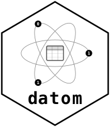

Resolve One Member Pointer Without a Connection in the Closure
Source:R/set.R
dot-datom_member_link.RdBuilds the $fetch link every member of a read set carries: call it with a
connection to the member's project and it resolves the pointer – a table
member to data via datom_read(), a set member to references via
datom_get_set().
Details
fetch rather than read or get because it is genuinely both. This is
the one polymorphic door in the design, and the member level is where the
domain forces it: iterating members, the caller cannot know each kind in
advance. At the top level they named one artifact they chose, which is why
datom_read() and datom_get_set() stay separate verbs.
This function is namespace-level, and that is load-bearing. A factory
defined inside datom_get_set() would put that call's frame – which holds
conn, and therefore the PAT – on the closure's parent chain, and
saveRDS() of the member would write the token into the file. Measured, same
code both ways: nested, 2094 bytes with the token present; namespace-level,
1609 bytes without. Every argument is forced so that nothing is left as a
promise pointing back at the caller's frame. The guard is a test on the
serialized bytes, not on environment(link), because an environment check
passes on the broken shape – there the connection sits one frame further up.
The link carries its own pointer as an attribute, so a consumer holding only a projection can still cite what they used. Links built without it cannot be repaired afterwards, which is why it ships with the factory rather than later.
It does not compare the member's project against the connection's, and it
must not. That looks free – both names are in hand – and it would refuse
working reads. For a reader connection, which is the primary consumer of a
set, project_name is a label the caller passes to datom_get_conn(): the
namespace comes from the store's bucket and prefix and nothing validates the
label against the repo. So a mismatch is the ordinary case rather than the error
case, and a gate here would abort a fetch that resolves correctly. Recording
the writer's own project name in metadata does not change this. It makes the
member's side of the comparison trustworthy; the connection's side is still a
label nobody checked, so comparing them still refuses working reads. Pinned by a
test that fetches through a deliberately mismatched label. A hint on an
already-failed resolution is a different thing and is left to the task that
owns that message.